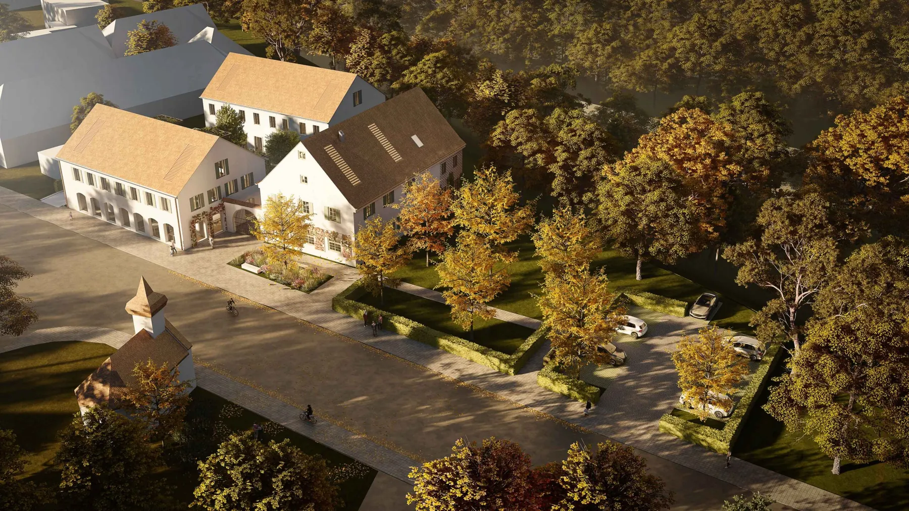
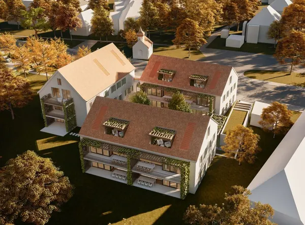

Grünwalder Einkehr, München
Architektur schafft Brücken zwischen Gegenwart und Vergangenheit
Architektur schafft Brücken zwischen Gegenwart und Vergangenheit
Über hunderte von Jahren war die Grünwalder Einkehr – vormals Geiselgaststeighof – eine markante Landmarke zwischen Stadt und Land. Zu einer Zeit, als die Straßenbahn aus München in Richtung Grünwald fuhr, war das Gasthaus beliebtes Ausflugsziel der Städter und mit dem Ensemble aus Wirtshaus, Schwemme und Kapelle ein Ort der Begegnung und des Austausches. Lange Jahre lag der Bestand nun brach, eine wirtschaftliche Nutzung des Wirtshauses war nicht mehr gesichert und so verlor die Grünwalder Einkehr mit den Jahren seine symbolische Bedeutung als historisches Ensemble, das den Ortseingang von Grünwald markiert. Bis heute!
Entwicklung einer Story-Architektur. Vorbild der Planung ist die ursprüngliche Bebauung des Grundstückes aus dem Jahr 1858
Die neuen Eigentümer haben sich nun zur Aufgabe gemacht, den Charakter dieses besonderen Wirtshauses, das zusammen mit der Kapelle und dem Salettl unter Ensembleschutz steht, aufrecht zu erhalten. Unterstützt werden sie dabei von BRÜCKNER Architekten. Der Entwurf bezieht sich auf das ursprüngliche Ensemble und führt dieses gestalterisch in die Gegenwart: Davon berührt sind der Städtebau, die Architektursprache, die Begrünungen. Sogar die historisch dokumentierte Allee-Situation wird entlang der Straße wiederhergestellt werden.
Competition
Die geplanten Materialien für das rund ca. 3.000 m² große Areal schlagen die Brücke zwischen städtischem Leben und ländlichem Charakter: Ruhige ziegelgedeckte Dächer ohne sichtbare Dachfenster auf der straßenzugewandten Seite, weiße Putzstrukturen und Holz-Elemente prägen das Erscheinungsbild. Apropos Holz: Das Material ist allerorts stark vertreten, die Architektur greift – wo immer möglich – die ursprüngliche Sprache des Hofes Geiselgasteig auf und schafft eine Klammer zwischen Stadt und Land.

Die Nutzung für das Ensemble ist noch nicht im Detail festgelegt. Klar ist: Es wird eine Mischung aus Wohnen und Gewerbe sein, wobei letzteres noch nicht definiert ist. Der Betreiber entwickelt hier eigenständig Nutzungskonzepte und plant die Schaffung von Büro- und Ladenflächen. Die Grünwalder Einkehr wird in Zukunft und nach voraussichtlicher Fertigstellung in den Jahren 2024 bzw. 2025 zwar keine Gastwirtschaft im herkömmlichen Sinn mehr sein, aber vieles wird an die ursprüngliche Nutzung erinnern. Wie zum Beispiel die einladende Innenhof-Situation, die an eine Dreiseithof-Situation angelehnt ist: Die Gebäude gruppieren sich um einen grünen Hof mit Brunnen.
aUFTRAGGEBER: SBI Real Estate
Entwicklung einer Storyarchitektur. Vorbild der Planung ist die ursprüngliche Bebauung des Grundstückes aus dem Jahr 1858.
Wiederbelebung des historischen Ensemble
Umnutzung Gasthaus zu Wohngebäude
Ergänzung durch hochmoderne Wohn- und Bürogebäude
Wir haben ihr Interesse geweckt? Sie haben Fragen oder wollen einen Termin mit uns vereinbaren? Dann hinterlassen Sie uns bitte eine Nachricht.
Wenn Sie uns eine Nachricht per Kontaktformular senden, so erheben, speichern und verarbeiten wir Ihre Daten nur, soweit dies für die Abwicklung Ihrer Anfragen und für die Korrespondenz mit Ihnen erforderlich ist. Hier finden Sie unsere Datenschutzerklärung.
Hinweis: Leider können wir aufgrund aktueller betrieblicher Umstände derzeit keine Schülerpraktika anbieten. Wir hoffen auf Ihr Verständnis und stehen für zukünftige Möglichkeiten gerne zur Verfügung. Vielen Dank.
Brückner Architekten GmbH Gabriel-Max-Straße 4 81545 München
BRÜCKNERINNEN Interior
REON Realisierung
PROPERTYMAX Maximales Baurecht
TGA Süddeutschland GmbH
Rendeffect GmbH
Wir haben Ihr Interesse geweckt?
Sie haben Fragen oder wollen einen Termin mit uns vereinbaren?